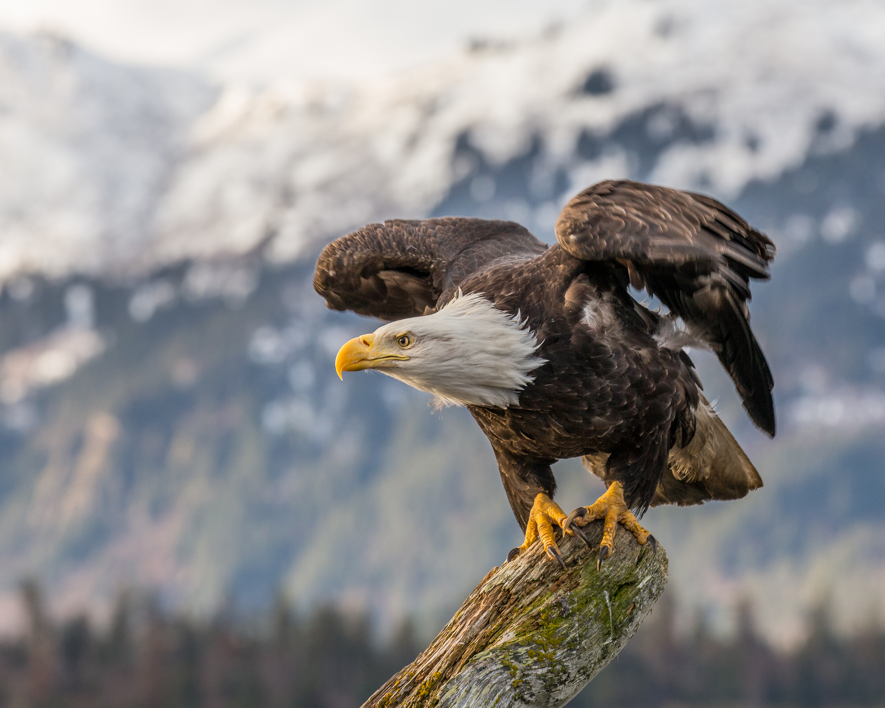

The bald eagle (haliaeetus leucocephalus) is native only to North America and are a national symbol of the United States of America, having been their national emblem since 1782.

Quick Facts
Bald eagles can be found in the wild in every US state with the exception of Hawaii.
Their name comes from the old English word "balde", which means white, rather than referring to them being bald.
Bald eagles do not develop their signature white heads and tails until around four or five and are first light grey and then brown.
Female bald eagles are larger than males, usually around 25% larger.
Bald eagles can live up to 25 years in the wild and 50 years in captivity.
The bald eagle was once an endangered species due to hunting but has since recovered due to successful conservation, with a 2021 estimated population of 316,000.
Bald eagles build extremely large nests, holding the world record for the largest bird nest.
Bald eagles are also exceptional swimmers, sometimes seen swimming after capturing prey.
Although their cries are often depicted as a longer and dramatic screeching sound in film and television (often the cry of a red-tailed hawk rather than a bald eagle), the bald eagle cry is more of a high-pitched whistle.